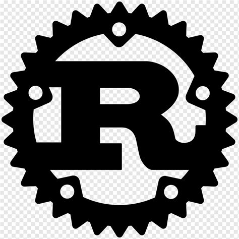

Rust:

O homem que programa em Rust eu tiro meu chapéu a ele, mas sinceramente o Rust é uma linguagem de programação muito segura, compilada e de alto desempenho, ele foi criado por Graydon Hoare e mantido pela Mozilla (Criadora do firefox) desde 2010,
o Rust é capaz de criar sistemas e software de baixo nível, web backend, programação concorrente, aplicação de alta performance e até webAssembly e bem, o Rust é usado e empresas de tecnologia (Exemplo: A mozilla), backend de alta performance, sistemas embarcados a IoT
e ferramentas de linhas de comando e DevOps.